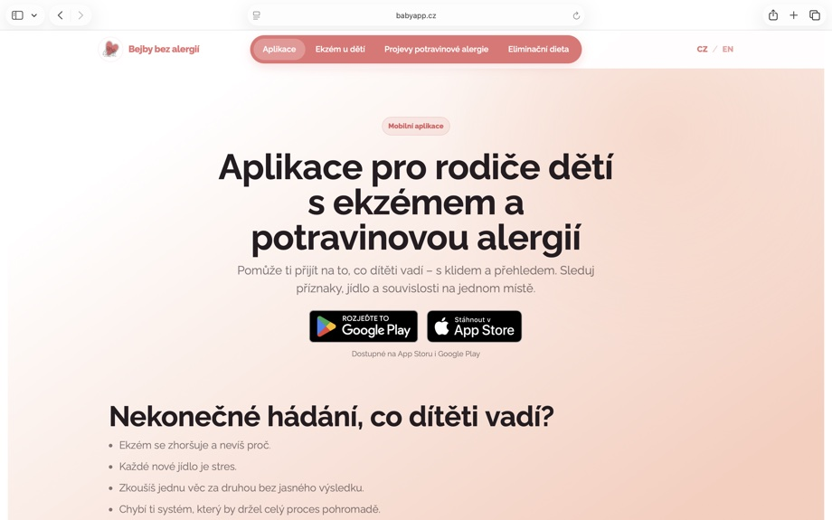
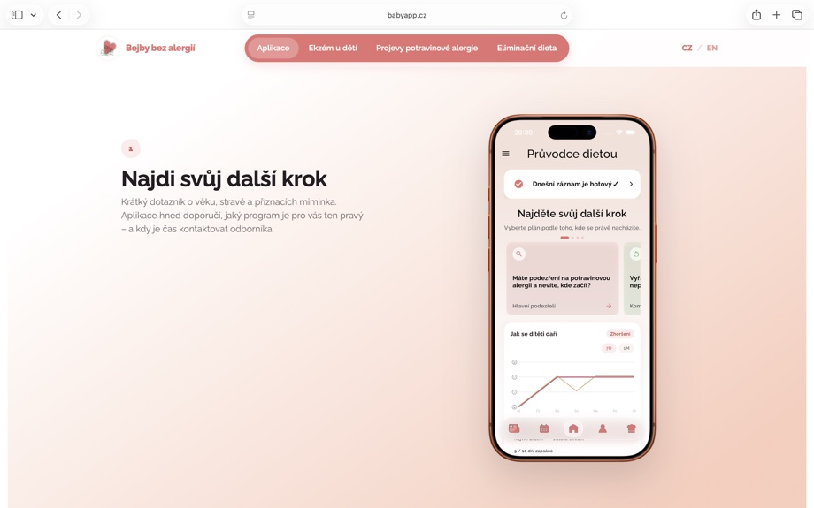
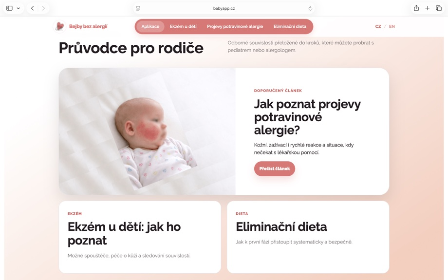
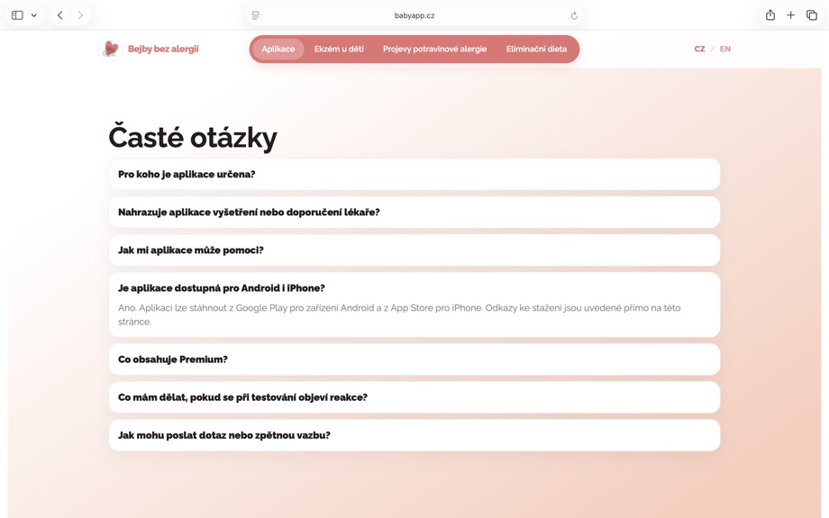
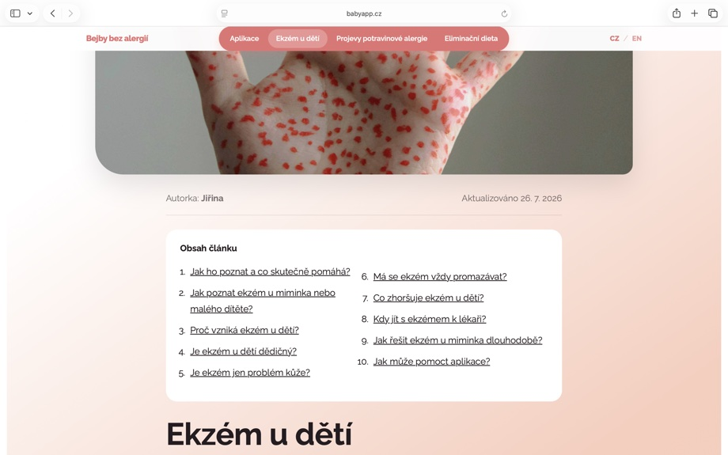
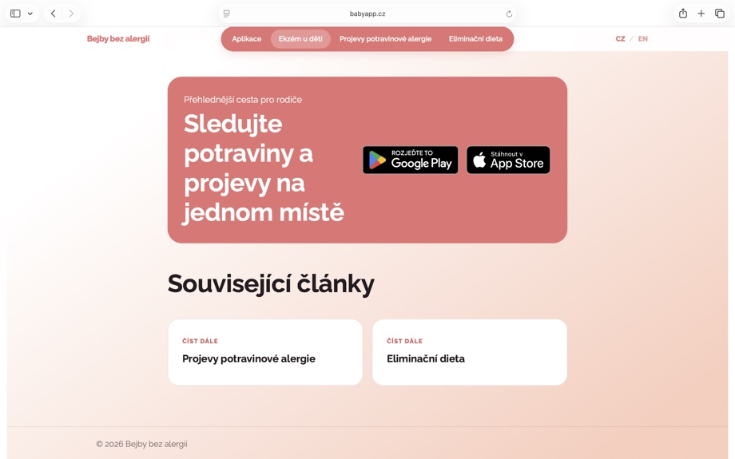

BabyApp.cz






Aplikace potřebovala vlastní online domov — místo, kde ji lidé najdou přes vyhledávání, pochopí, co řeší, a mohou si ji stáhnout nebo se zapojit ještě před spuštěním.
Než byla aplikace vydaná, potřebovala jsem způsob, jak sbírat kontakty na rodiče, kteří měli zájem ji vyzkoušet, a budovat okruh lidí, kterým jsem mohla posílat novinky a žádat o zpětnou vazbu.
Zároveň jsem chtěla, aby web pomáhal lidem najít aplikaci přes vyhledávání témat, která řeší – ekzém, potravinové alergie, eliminační dieta.
Po spuštění aplikace se z webu stala hlavně vstupní brána – místo, kde si lidé přečtou, jak aplikace funguje, najdou odpovědi na časté otázky a stáhnou si ji na App Store nebo Google Play.
Je dostupný v češtině i angličtině.
→ Navštívit babyapp.cz